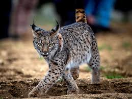

Lince Ibérico
 En 2023, la población de linces ibéricos en España y Portugal superó los 2000 ejemplares, con 1730 en España y 291 en Portugal, mostrando una tendencia positiva en su recuperación.
Amenazas
A pesar de la recuperación, el lince ibérico aún enfrenta amenazas como la destrucción de hábitat, la disminución de su presa principal (conejo europeo) y los atropellos en carreteras.